examples
examples.Rmdscplot
We started developing a new add-on package to scanfor visualizing single-case data: scplot. This function will gradually replace the plot.scdf() (short: plot()) function already included in scan and finally be included into to the scan package. Here are some advantages of using scplot over the standard scan plot function:
-
scplotis already much more versatile thanplothas been. -
scplotwas designed to encompass a pipe style coding which is much cleaner, more intelligible and easier to code. -
scplotis based onggplot2and produces aggplot2object which can be modified and extended to any wishes.
We consider the state of scplot to be experimental. That is, the code and syntax might change in future versions so backward compatibility is not guaranteed.
But we will keep the “old” plot.scdf in future versions of scan.
Here are a few plots that have been generated with scplot to demonstrate its possibilities.
Install scplot
scplot is hosted as a gitHub project at https://github.com/jazznbass/scplot. You can install it with devtools::install_github("jazznbass/scplot", dependencies = TRUE) from your R console. Make sure you have the package devtools installed before. The package has to be compiled. When you are running R on a Windows machine you also have to install Rtools. Rtools is not an R package and can be downloaded from CRAN at https://cran.r-project.org/bin/windows/Rtools/. MacOs and Linux users usually do not need to take this extra step.
Add datalines
scplot(exampleAB_add) %>%
add_dataline("depression", color = "darkred", linetype = "dotted",
point = list(shape = 17))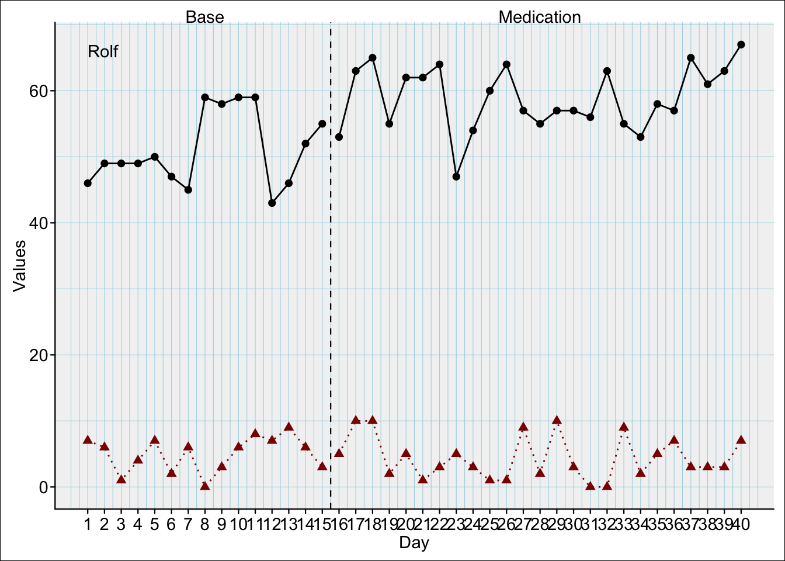
Add statlines
Lines indicating a constant for each phase
Possible functions: mean, min, max, quantile
scplot(exampleABC) %>%
add_statline("mean", color = "darkred") %>%
add_statline("max", color = "darkblue", linetype = "dashed") %>%
add_statline("min", color = "brown", linetype = "dashed")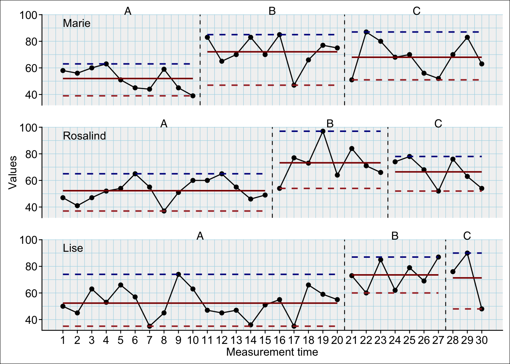
Lines indicating a constant for a specific phase
Set the phase argument with one or multiple phase-names or phase-numbers
Possible functions: mean, min, max, quantile
scplot(exampleABC) %>%
add_statline("mean", phase = "A", color = "darkred") %>%
add_statline("max", phase = c("B", "C"), color = "darkblue", linetype = "dashed") %>%
add_statline("min", phase = c(2, 3), color = "orange", linetype = "dashed")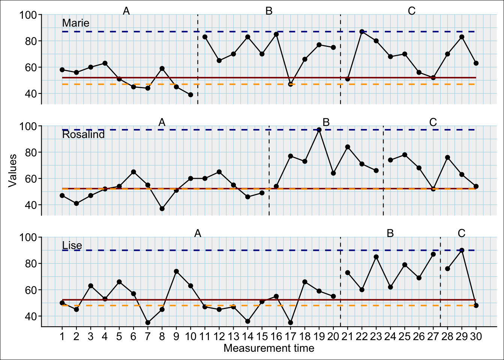
Trend-lines
trend (separate trend-line for each phase), trendA (extrapolated trend-line of first phase):
scplot(exampleABC) %>%
add_statline("trend", color = "darkred") %>%
add_statline("trendA", color = "darkblue", linetype = "dashed")
Smoothed curves
Possible functions: movingMean, movingMedian, loess, lowess:
scplot(exampleABC) %>%
add_statline("loess", color = "darkred") %>%
add_statline("movingMean", color = "darkblue")Refine with addidtional arguments
mean : trimquantile: probsmovingMean, movingMedian: lagloess: spanlowess: f
scplot(exampleABC) %>%
add_statline("movingMean", lag = 1, color = "darkblue") %>%
add_statline("quantile", probs = 0.75, color = "darkred")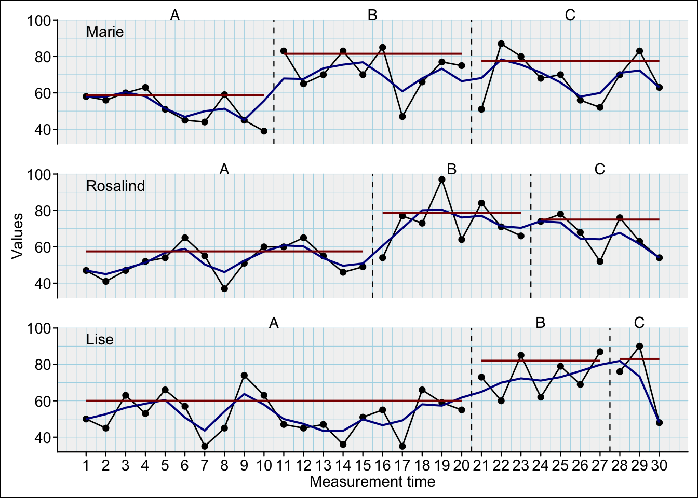
Specify data-line
If you do not specify the variable argument the default first data-line is addressed.
scplot(exampleAB_add) %>%
add_dataline("cigarrets", color = "darkblue", point = list(size = 1)) %>%
add_statline("mean", variable = "cigarrets", color = "darkred") %>%
add_statline("trend", linetype = "dashed")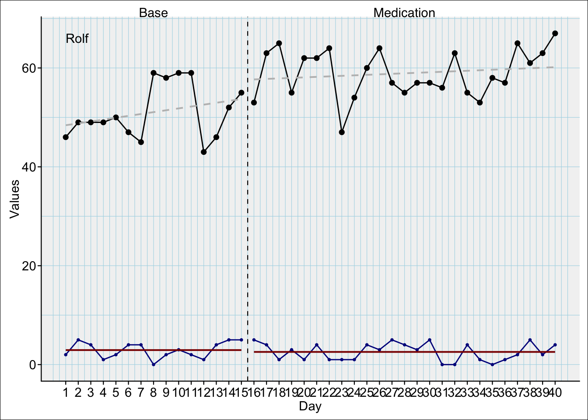
Annotate and mark
Add marks
The positions argument can take a numeric vector:
scplot(exampleABC) %>%
add_marks(case = 1, positions = c(7, 12)) %>%
add_marks(case = 3, positions = c(3, 17), color = "blue", size = 7)The positions argument can also be a string containing a logical expression. This will be evaluated and the respective positions will be marked.
scplot(exampleABC) %>%
add_marks(case = 1, positions = "mt > 15") %>%
add_marks(case = 2, positions = 'phase == "B"', color = "green", size = 5) %>%
add_marks(case = 3, positions = "values > quantile(values, probs = 0.80)", color = "blue", size = 7) %>%
add_marks(case = "all", positions = "values < quantile(values, probs = 0.20)", color = "yellow", size = 7) %>%
add_caption("Note.
red: mt > 15 in case 1;
green: phase 'B' in case 2;
blue: values > 80% quantile of case 3;
yellow: values < 20% quantile of all cases")And the positions argument can take the results from a scan outlier analyses and mark the positions of the outliers of each case:
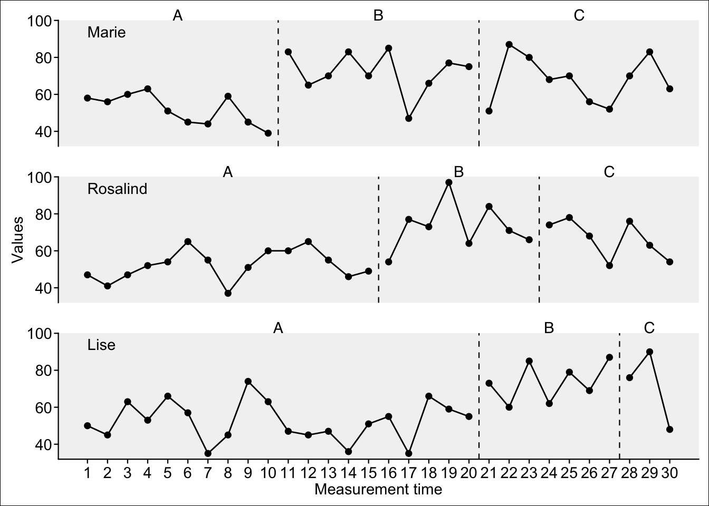
Change appearance of basic plot elements
Data line
scplot(exampleABC) %>%
set_dataline(color = "blue", width = 1, linetype = "dotted",
point = list(colour = "red", size = 1, shape = 2))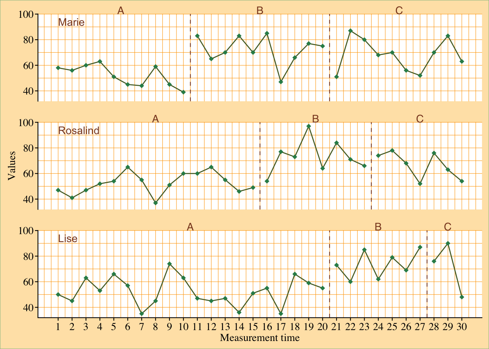
Themes
Themes are complete styles that define various elements of a plot.
Function add_theme("theme_name")
Possible themes:
basic, grid, default, small, tiny, big, minimal, dark, sienna, phase_color, phase_shade, grid2
Combine themes
When providing multiple themes the order is important as the latter overwrites styles of the former.
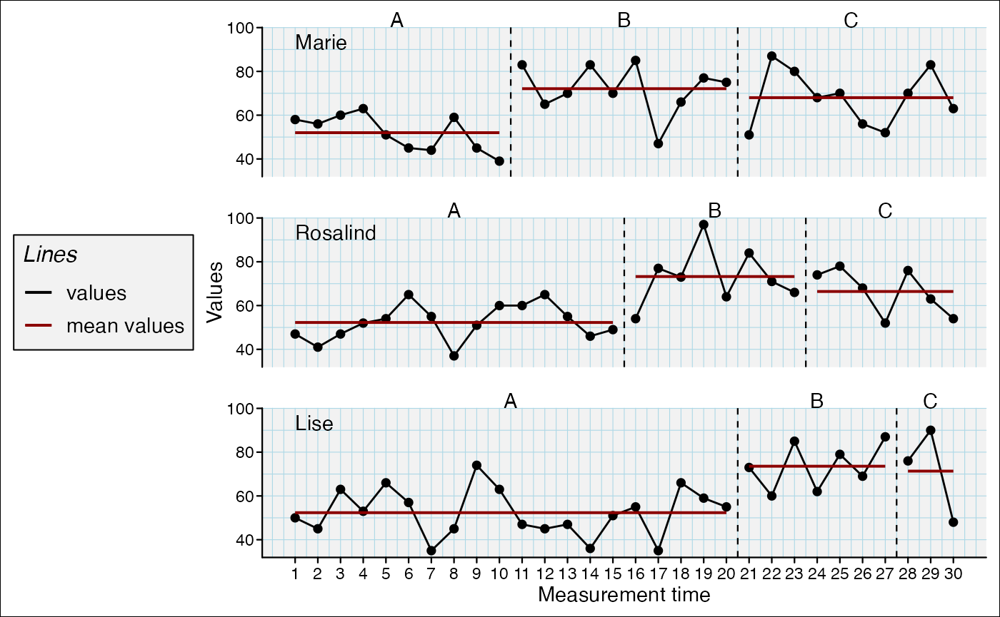
is different from
Set base text
The base text size is the absolute size. All other text sizes are relative to this base text size.
scplot(exampleAB_decreasing$Peter) %>%
set_base_text(colour = "blue", family = "serif", face = "italic", size = 14)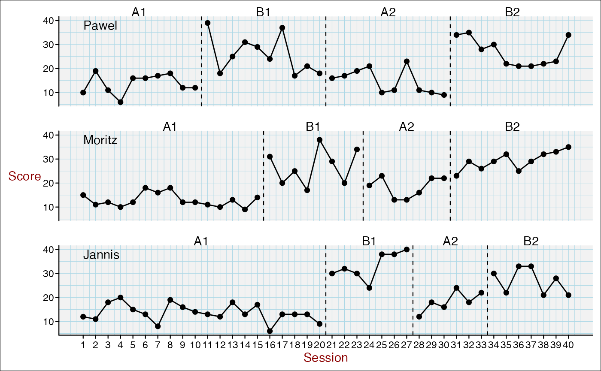
Add title and caption
scplot(exampleAB_decreasing) %>%
add_title("A new plot", color = "darkblue", size = 1.3) %>%
add_caption("Note. What a nice plot!", face = "italic", colour = "darkred")Add a legend
scplot(exampleABC) %>%
add_statline("mean", color = "darkred") %>%
add_statline("min", phase = "B", width = 0.2, color = "darkblue") %>%
add_legend()and set specific elements
scplot(exampleABC) %>%
add_statline("mean", color = "darkred") %>%
add_legend(
position = "left",
title = list(size = 12, face = "italic"),
background = list(fill = "grey95", colour = "black")
)
Customize axis settings
When axis ticks are to close together set the increment argument to leave additional space (e.g. increment = 2 will annotate every other value). When you set increment_from = 0 an additional tick will be set at 1 although counting of the increments will start at 0.
scplot(exampleA1B1A2B2) %>%
set_xaxis(increment_from = 0, increment = 5,
color = "darkred", size = 0.7, angle = -90) %>%
set_yaxis(limits = c(0, 50), size = 0.7, color = "darkred") 
Customize axis labels
scplot(exampleA1B1A2B2) %>%
set_ylabel("Score", color = "darkred", angle = 0) %>%
set_xlabel("Session", color = "darkred")
Change Casenames
scplot(exampleA1B1A2B2) %>%
set_casenames(c("A", "B", "C"), color = "darkblue", size = 1)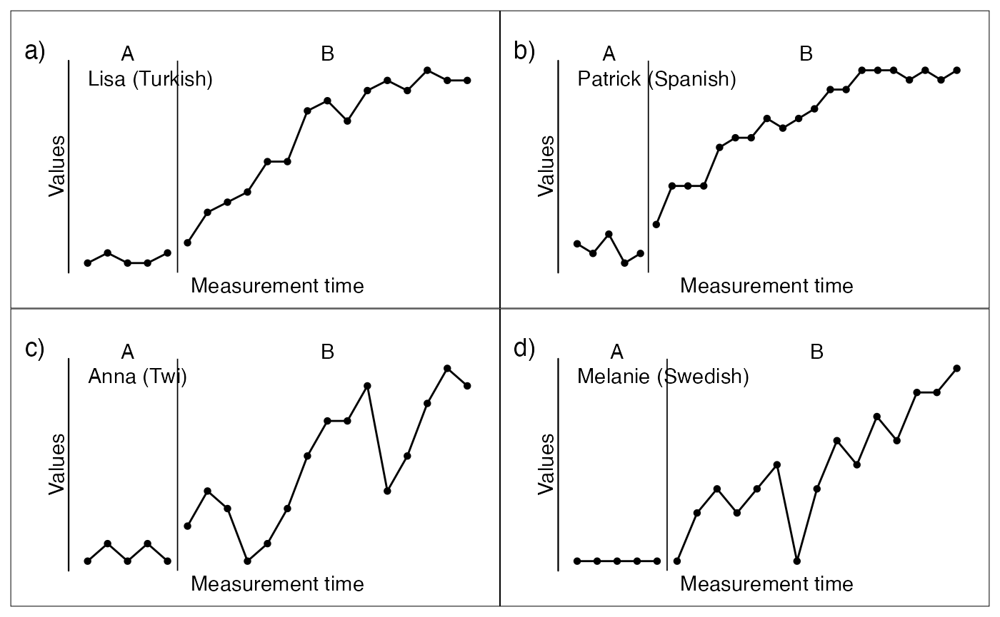
Casenames as strips:
scplot(exampleA1B1A2B2) %>%
set_casenames(position = "strip",
background = list(fill = "lightblue"))Add value labels
scplot(exampleABC) %>%
add_labels(text = list(color = "black", size = 0.7),
background = list(fill = "grey98"), nudge_y = 7)If you set the nudge_y argument to 0, the label will be set on-top the datapoints:
scplot(exampleABC) %>%
add_labels(text = list(color = "black", size = 0.7),
background = list(fill = "grey98"), nudge_y = 0)
Complexs examples
Here are some more complex examples
scplot(example_A24) %>%
add_theme("default") %>%
add_statline("lowess", color = "darkred", width = 1.5) %>%
add_statline("loess", color = "red", width = 1.5) %>%
add_statline("movingMean", lag = 3, color = "lightpink", width = 1.5) %>%
set_xaxis(size = 0.8, angle = 35) %>%
set_dataline(point = list(size = 0)) %>%
add_legend(position = c(0.8, 0.75), background = list(color = "grey50")) %>%
set_phasenames(c("no speedlimit", "with speedlimit"), position = "left",
hjust = 0, vjust = 1) %>%
set_casenames("") %>%
add_title("Effect of a speedlimit on the A24") %>%
add_caption("Note: Moving mean calculated with lag three", face = 3) %>%
add_ridge(color = "lightblue")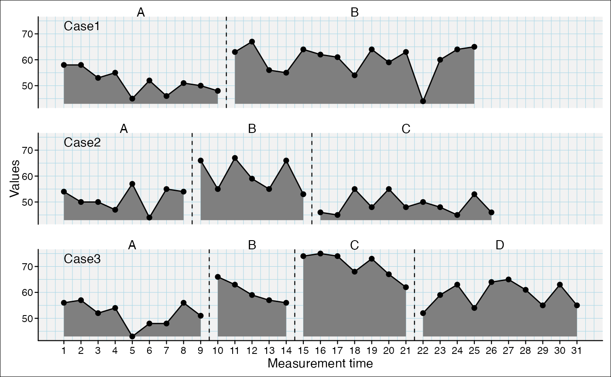
scplot(exampleAB_add) %>%
add_dataline("cigarrets", color = "darkblue", point = list(size = 1)) %>%
add_statline("trend", linetype = "dashed") %>%
add_statline("mean", variable = "cigarrets", color = "darkred") %>%
add_marks(positions = c(14,20), size = 3, variable = "cigarrets")%>%
add_marks(positions = "cigarrets > quantile(cigarrets, 0.75)", size = 3) %>%
set_xaxis(increment = 5) %>%
set_phasenames(color = NA) %>%
set_casenames(position = "strip") %>%
add_legend(title = list(color = NA), text = list(face = 3)) %>%
set_panel(fill = c("lightblue", "grey80")) %>%
add_ridge(color = "snow", variable = "cigarrets") %>%
add_labels(variable = "cigarrets", nudge_y = 2,
text = list(color = "blue", size = 0.5)) %>%
add_labels(nudge_y = 2, text = list(color = "black", size = 0.5),
background = list(fill = "white"))
scplot(exampleA1B1A2B2) %>%
set_xaxis(increment = 4, color = "brown") %>%
set_yaxis(color = "sienna3") %>%
set_ylabel("Points", color = "sienna3", angle = 0) %>%
set_xlabel("Weeks", size = 1, color = "brown") %>%
add_title("Points by week", color = "sienna4", face = 3) %>%
add_caption("Note: An extensive Example.",
color = "black", size = 1, face = 3) %>%
set_phasenames(c("Baseline", "Intervention", "Fall-Back", "Intervention_2"),
size = 0) %>%
add_ridge(alpha("lightblue", 0.5)) %>%
set_casenames(labels = sample_names(3), color = "steelblue4", size = 0.7) %>%
set_panel(fill = c("grey80", "grey95"), color = "sienna4") %>%
add_grid(color = "grey85", size = 0.5) %>%
set_dataline(color = "black", width = 0.5, linetype = "solid",
point = list(colour = "sienna4", size = 0.5,
shape = 18)) %>%
add_labels(text = list(color = "sienna", size = 0.7), nudge_y = 4) %>%
set_separator(size = 0.5, linetype = "solid", color = "sienna") %>%
add_statline(stat = "trendA", color = "tomato2") %>%
add_statline(stat = "max", phase = c(1, 3), linetype = "dashed") %>%
add_marks(case = 1:2, positions = 14, color = "red3", size = 2, shape = 4) %>%
add_marks(case = "all", positions = "values < quantile(values, 0.1)",
color = "blue3", size = 1.5) %>%
add_marks(positions = outlier(exampleABAB), color = "brown", size = 2) %>%
add_text(case = 1, x = 5, y = 35, label = "Interesting",
color = "darkgreen", angle = 20, size = 0.7) %>%
add_arrow(case = 1, 5, 30, 5, 22, color = "steelblue") %>%
set_background(fill = "white") %>%
add_legend()